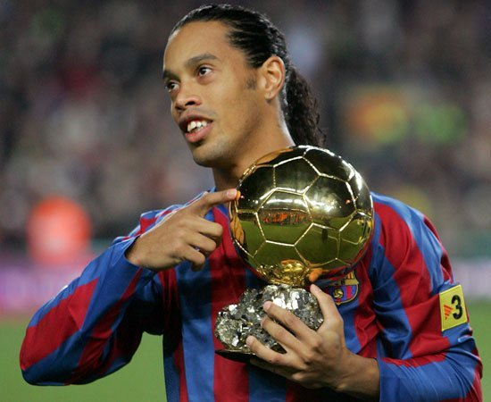

Nome completo: Ronaldo de assis moreira
Data de nacimento:21/03/1980 (41 anos)
Ronaldinho Gaúcho (1980) é jogador de futebol brasileiro, considerado um dos maiores que o Brasil já teve. Foi pentacampeão pela seleção brasileira em 2002, na copa da Coréia do Sul e Japão. Foi considerado o melhor jogador do mundo por dois anos seguidos, pela FIFA: 2004 e 2005. Ronaldo de Assis Moreira, nasceu no Rio Grande do Sul. Desde a infância, já revelava seu talento para o futebol, quando entrou para o Grêmio Football Porto-Alegrense com apenas 7 anos. Ronaldinho Gaúcho começou sua carreira no futebol profissional em 1997. Em 1999, foi convocado para a seleção brasileira. Nesse ano, marcou 22 gols, que lhe deu maior visibilidade. Em 2001, jogou pelo Paris Saint- Germain, time francês. Porém, teve problemas de extracampo quando ficou por 6 meses afastado por conta de uma briga jurídica. Jogou na copa de 2002, no Japão e Coréia do Sul e foi penta campeão com a seleção treinada por Felipe Scolari, o Felipão. Nessa copa, foi um dos jogadores de maior destaque juntamente com Rivaldo e Ronaldo. Em 2006, conquistou a liga dos campeões da Europa jogando no Barcelona e chegou ao auge de sua carreira. Mas seu declínio aconteceu nesse mesmo ano quando o time catalão perdeu o mundial de interclubes para o Internacional. Amargou sucessivas más atuações no Barcelona, até ser negociado pelo Milan, da Itália, onde teve atuação mediana inicialmente, melhorando no decorrer do tempo. Em 2011 foi jogar no Flamengo, onde não conseguiu a mesma atuação de outrora. Em 2012, saiu do Flamengo em meio a muitas polêmicas. O jogador acionou o time carioca na justiça por atraso de salário. No mesmo ano, foi jogar no Atlético Mineiro, time de Minas Gerais.
Ronaldinho Gaúcho conquistou 12 títulos na carreira, entre eles, uma vez a Recopa Sul-Americana, uma vez a Libertadores, uma vez o Campeonato Italiano, duas vezes a Supercopa da Espanha, duas vezes o Espanhol, uma vez a Champions League, uma vez a Copa das Confederações, uma vez a Copa do Mundo sub17, uma vez a Copa América e uma vez a Copa do Mundo